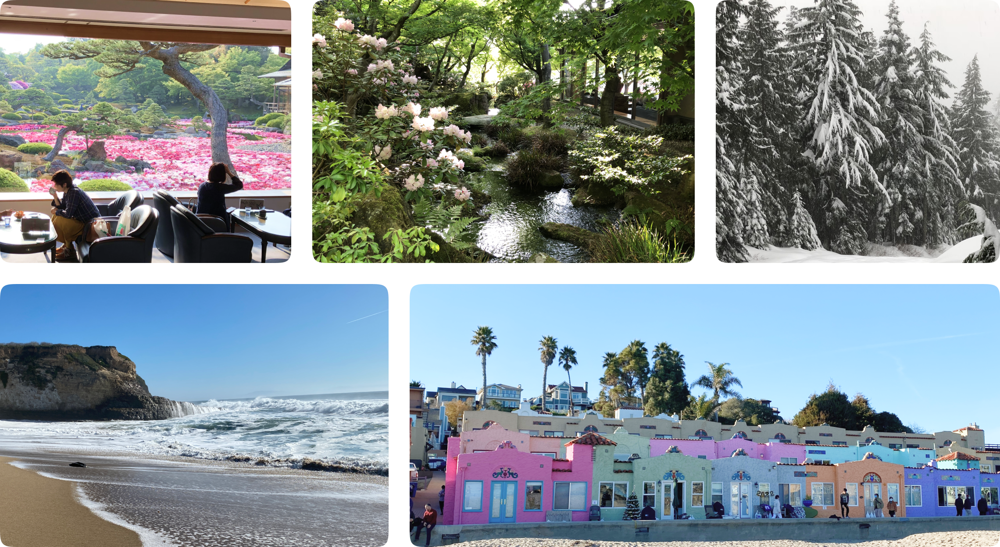
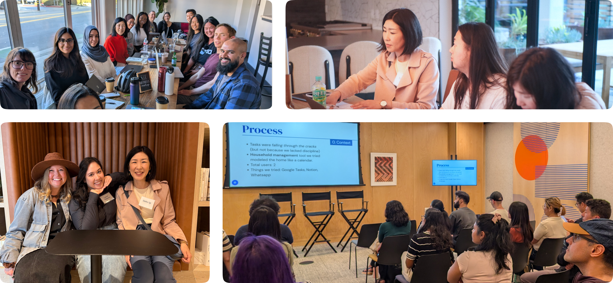
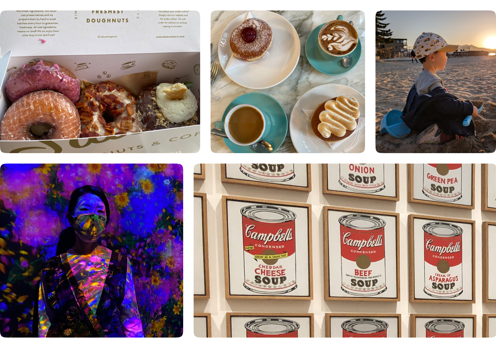

I’m Seiko, a Product Designer
I’m a Product Designer with over 10 years of experience creating consumer, enterprise, responsive web, and mobile apps. I love building systematic structures and making complicated things simple.
I grew up in rural Japan. My design career started after I moved to Canada, where I studied Media and Web Design and graduated in 2015. Then, I moved to California in 2019.
I have moved eight times in my life. Each move taught me to adapt to new cultures and connect with all kinds of wonderful and creative people, shaping who I am today.

Design community organizer
UX Wizards is a Bay Area-based UX/UI learning community with over 7,900 members. Since 2019, I have been an event organizer for this community, hosting various events and helping manage our growing community.

Life outside of work
I love coffee shop hunting and exploring museums. I’m also a home "usability" enthusiast, and I love laughing with my son.
